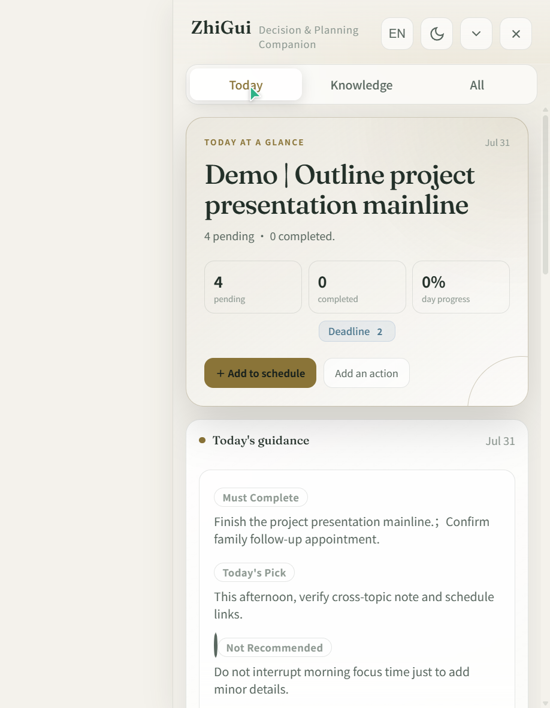
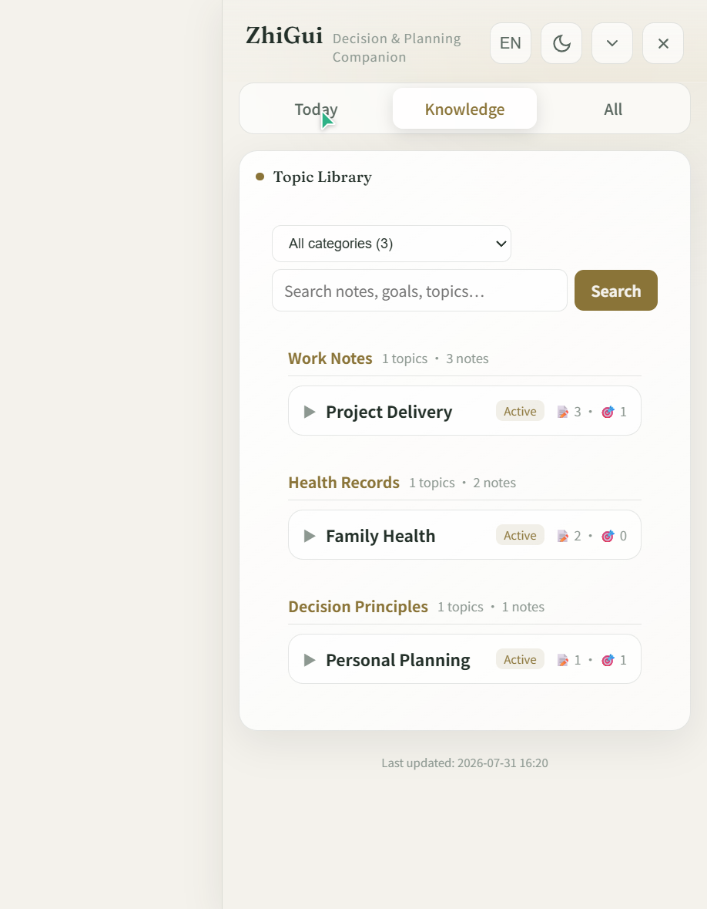
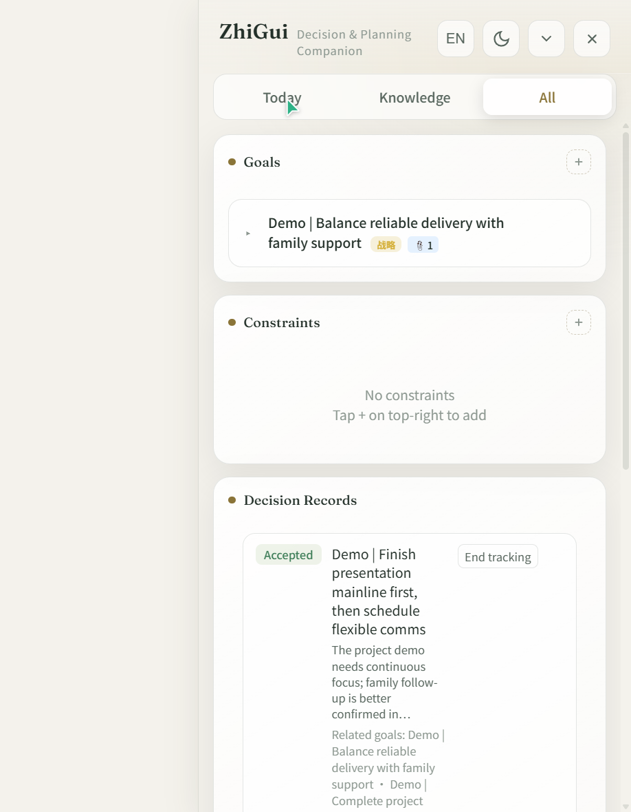

ZhiGui is a conversation-triggered personal assistant system composed of three core components:
ZhiGui is not a simple to-do list tool. Its design is inspired by three classic role models, each corresponding to a core capability layer:
Helps you see the big picture, schedule your day, and prepare morning briefings and reviews. At the start of every conversation, it already knows what you have planned today, which tasks are overdue, and which goals are in progress.
Quietly manages all daily affairs — note archiving, topic classification, action tracking, and decision recording. You never need to worry about how data is stored or where; the butler takes care of it for you.
Inspired by the Mentor character in classic fantasy literature — a teacher hidden deep in your mind. It won't make decisions for you, but when you need it, it offers precise advice: what you shouldn't do, which goals are fantasies, which decisions will sow hidden risks.
Underlying all three roles is a single knowledge graph: notes, goals, decisions, and schedules are interlinked through foreign keys, forming a traceable memory network.
ZhiGui never initiates conversations on its own — it is not a background daemon. When you ask it, it reports like a secretary; when you instruct it, it executes like a butler; when you hesitate, it reminds you like a mentor. All three roles are driven by the same dataset, and switching is seamless.
ZhiGui consists of three core parts:
A backend JSON-file-driven data layer that exposes 40+ tool calls to AI assistants via the Model Context Protocol, with no need to run independently.
A visualization panel that docks to the screen edge, supports collapse/expand toggling, and lets you directly edit schedules, goals, notes, and to-do items.
An operational specification defined in SKILL.md. The AI loads a Bootstrap package at the start of every conversation to obtain the full index of your context.
Notes, goals, decisions, and schedules are interlinked through foreign keys like topicId / noteIds / goalId, forming a traceable knowledge relationship graph.
Panel operations and AI conversations share the same data entities, synchronized in real time through file watching (fs.watch). If you edit a schedule in the panel, the next AI conversation sees it immediately; notes created by the AI are auto-refreshed in the panel.
User ←→ AI Assistant (Trae/Cursor, etc.)
↕ MCP Protocol
ZhiGui Engine (server.js)
↕ JSON File Read/Write
.zhigui/ Data Directory
↕ fs.watch File Watching
Electron Panel (main.js)
↕ IPC Communication
Frontend UI (dashboard.js)ZhiGui's setup follows a three-step core flow: Download & Extract → Upload Skill to AI Agent → Configure MCP. After completing these three steps, your AI assistant can read and write your knowledge graph. The desktop panel is an optional add-on.
https://nodejs.orgDownload the ZIP from GitHub: https://github.com/CarlWangChina/zhigui-openclaw-ui-second-brain-skill
Or clone with Git:
git clone https://github.com/CarlWangChina/zhigui-openclaw-ui-second-brain-skill.gitExtract to any directory, for example D:\ZhiGui. The extracted directory structure:
D:\ZhiGui\
├── start.bat ← Windows one-click launch script
├── start.sh ← macOS/Linux launch script
├── skill\ ← Skill core package
│ ├── engine\ ← MCP engine + business logic
│ ├── dashboard\ ← Web panel (server.js + public/)
│ ├── electron\ ← Electron desktop shell (main.js + preload.js)
│ ├── lib\ ← Configuration & data initialization
│ ├── scripts\ ← Install & seed scripts
│ ├── test\ ← Test suites
│ ├── SKILL.md ← AI skill protocol document
│ ├── config.json ← Engine configuration
│ ├── mcp-config-template.json ← MCP config template
│ └── package.json ← Dependency declaration
├── zhigui-user-manual\ ← Chinese user manual (HTML + PDF)
├── zhigui-user-manual-en\ ← English user manual (HTML + PDF)
├── package.json ← Electron dependencies
└── README.mdThis step installs ZhiGui's skill protocol (SKILL.md) into your AI tool, so the AI knows how to use ZhiGui's toolset.
Different AI tools have different skill directory locations:
%USERPROFILE%\.trae-cn\skills\Copy the contents of the project's skill\ directory to your AI tool's skill directory:
# Using Trae as an example (PowerShell)
Copy-Item -Path .\skill\* -Destination $env:USERPROFILE\.trae-cn\skills\zhigui\ -RecurseOr use the project's built-in setup script to do it automatically:
node skill/scripts/setup.js <project_directory> <skill_directory> <node_path>Start a new conversation in your AI tool. If the AI can recognize ZhiGui-related commands (e.g., "Show me today's schedule"), the skill has been successfully loaded.
SKILL.md is the AI's behavioral specification document, defining how the assistant understands your data and when to call which tools. You can modify it to customize your own assistant personality and behavioral preferences — see Chapter 4 for details.
MCP (Model Context Protocol) is the bridge through which AI assistants invoke ZhiGui tools. Once configured, the AI can read and write your schedules, notes, goals, and other data. After these three steps, the system is fully operational.
Find the MCP configuration entry in your AI tool:
Paste the following JSON, replacing the path with your actual extracted path:
{
"mcpServers": {
"zhigui": {
"command": "node",
"args": ["D:/ZhiGui/skill/engine/server.js"]
}
}
}You can also refer to the mcp-config-template.json template file in the project root directory.
After saving, the AI tool will automatically connect to the MCP server. In a conversation, say "Show me today's schedule". If the AI calls the zhigui_get_assistant_bootstrap tool and returns data, the configuration is successful.
If you don't want to edit JSON manually, you can simply tell the AI in a conversation: "Please call the zhigui tool. The MCP server file path is D:/ZhiGui/skill/engine/server.js. Configure it for me." The AI will automatically write the MCP configuration and verify the connection.
node is not in PATH, use the full path: "C:/Program Files/nodejs/node.exe"/ to avoid backslash escaping issuesThe desktop panel is ZhiGui's visual interface for editing schedules, goals, notes, and to-dos. The panel is optional — once MCP is configured, the AI can already read and write data, but the panel lets you view and manipulate things directly.
Double-click start.bat (Windows) or run ./start.sh (macOS/Linux).
The script will automatically perform the following operations:
npm install)The first launch downloads Electron (about 100MB); please be patient. An npmmirror mirror is preconfigured to accelerate downloads for users in mainland China.
When a narrow panel window appears on the right side of your desktop with the title bar showing "ZhiGui", the installation is successful.
If you want to load demo data to see it in action, run the following in the project's skill\ directory:
node scripts/seed-demo-data.js # Chinese demo data
node scripts/seed-demo-data-en.js # English demo dataThis creates 3 sample notes, 2 goals, 1 decision, and a 3-day schedule to help you quickly understand the system's features.
If you don't want to install Electron, you can run just the web server:
cd skill
node dashboard/server.jsThen open http://localhost:7788 in your browser to use the panel.
config.json is located in the skill directory and controls where the engine points its data directory:
| Field | Description | Example |
|---|---|---|
dataDir | Data storage directory (self-contained relative path, or absolute path) | .zhigui |
appDir | App root directory (. in standalone mode) | . |
installedAt | Installation timestamp | 2026-07-31T... |
The panel has two forms: expanded mode (full-feature panel, docked to the right edge of the screen) and collapsed mode (a small icon in the bottom-right corner; click to restore expanded mode).
The panel provides three view tabs:
Morning briefing, schedule, to-do items, completed tasks, daily reflection — everything you need to focus on today.
Topic library, note index, full-text search — the knowledge indexing layer of your second brain.
Goals, constraints, decisions, notes — the complete list of all long-term entities.

The large text area at the top shows today's date, total task count, in-progress goal count, today's completion percentage, and attention signal badges (e.g., "2 overdue · 1 blocked").
Two quick-action buttons are provided: Add to Schedule (opens the event-add dialog) and Add Item (opens the to-do-add dialog).
A decision briefing generated by the AI during your first conversation of the day, containing 5 fixed blocks:
| Block | Marker Color | Description |
|---|---|---|
| Must Do | Red | Tasks that must be completed today; leaving them undone has consequences |
| Recommended Today | Green | Items the AI recommends handling today |
| Not Recommended | White | Things to avoid doing today and why |
| Strategic Reminder | Gold | Directional reminders for long-term goals |
| Daily Quote | Gold | An inspiring daily phrase |
The morning briefing is a "today-only" feature — the engine refuses to write a briefing for any date other than today. If you view a future day, the panel shows a "Preview (not today's briefing)" label.
Displays all task cards for the day, organized by date. Each task card shows:
The top of the schedule area has date navigation: ‹ previous day, › next day, calendar icon opens a month picker to select a date.
A queue of to-do items that have not been assigned a date. Each card shows the title, priority (must/should/nice), and linked notes. Click to edit or complete.
Today's completed to-do items, shown with strikethrough and semi-transparent styling. Each item has a Restore button to undo the completion status.
A review report generated by the AI during your last conversation of the day, including: a summary of completed items, goal health check, attention changes, and lifecycle management suggestions.

All topics are displayed as cards, showing note count, linked goal count, and linked action count. Supports filtering by category and full-text search.
The search bar supports full-text retrieval across notes, goals, and topics. Each topic can be expanded to view all note titles under it.
Notes are displayed as index cards (title and metadata only; body content is not preloaded). Click a card to expand and view the full content.
A "Record Note" button lets you manually enter notes directly in the panel. For file imports, attach files in chat and let the AI handle them.

Displays strategic goals and current goals. Each goal card can be expanded to view linked tasks, linked notes, and decision records.
Long-term constraint conditions, such as "Sleep before 11 PM to protect eyesight". Constraints influence the AI's scheduling suggestions.
Structured decision records, including title, rationale, impact, and linked entities. Decisions have 5 states: Pending, Accepted, Rejected, Expired, Superseded.
After clicking the collapse button, the panel shrinks into a small circular icon in the bottom-right corner (showing "ZhiGui"). Click the icon to restore the expanded panel. Window position and always-on-top state are persisted.
What sets ZhiGui apart from ordinary to-do tools is a four-layer intelligent design: proactive linking, layered indexing, long-term memory, and a customizable skill protocol.
ZhiGui's core design philosophy: connecting entities is the core value of a second brain, not an optional feature. You don't need to manually tell the AI which note relates to which goal — the AI proactively searches and establishes the links.
noteIds[]An unlinked note is a lost note. ZhiGui's proactive linking discipline ensures every piece of information is attached to a node in the knowledge graph — forming a traceable relationship network through foreign keys like topicId, noteIds, and goalId. The "Linked goal · 3 notes · 1 decision" you see in the panel is how this works.
ZhiGui adopts a three-layer data architecture: index first, details on demand. This is the key to how it remembers all your information without blowing up the context window.
| Layer | Name | Content | When Loaded |
|---|---|---|---|
| Layer 0 | Compact Index | Only ID, title, category — enough to locate, not enough to fabricate details | Auto-loaded at the start of every conversation (Bootstrap package) |
| Layer 1 | Full Details | The complete content of a single entity — goal description, note body, schedule | Loaded on demand only when the user asks about that entity |
| Layer 2 | Precomputed Summary | Morning briefing, attention summary — conclusions the engine has already computed for you | First conversation of the day / when decision advice is needed |
The Bootstrap package (Layer 0) typically takes only 2–4K tokens and contains the index of all your notes, goals, and schedules. The AI decides from the index which entities need details, then calls tools like zhigui_get_note_detail to load individual Layer 1 records. This means even with thousands of notes, each conversation only consumes tokens relevant to the current topic.
ZhiGui's memory is persistent file storage, not session-level context. Your data exists as JSON files on your local disk, preserved permanently across sessions and tools.
At the start of every new conversation, the AI calls zhigui_get_assistant_bootstrap to load the full index. Yesterday's notes, last week's goals, last month's decisions — all in memory.
Data lives in local JSON files, not bound to any AI platform. Use Trae today, switch to Cursor tomorrow, VS Code the day after — the same dataset, the same memory.
Every create, modify, and complete operation is recorded in the activity journal. The AI uses zhigui_reconcile_activity to catch up on panel changes made while you were offline, so nothing is missed.
Each data change increments stateVersion. The AI uses it to determine what's new since the last conversation, loading only the delta rather than the full set.
SKILL.md is ZhiGui's "soul file" — it defines the AI assistant's behavioral norms, role positioning, and operating procedures. By editing it, you can shape a butler of your own.
description and role paragraphs# Open skill/SKILL.md and modify the opening section:
description: A study advising assistant. Use this skill when the user
discusses study plans, review progress, subject scheduling, or time
allocation.
# ZhiGui Study Advisor Protocol
You are a study advisor. Role positioning:
- Secretary: Manage daily review schedules and progress tracking
- Butler: Archive notes by subject, flag weak knowledge points
- Mentor: Remind you of goals when you slack off, dissuade you when
you try to take on too much
## Morning Briefing Customization
- Must Do: Subjects and chapters that must be reviewed today
- Recommended Today: Review content suggested by the forgetting curve
- Not Recommended: Do not start more than 3 new subjects at once
- Strategic Reminder: XX days until the examEditing SKILL.md does not affect data files; it only changes the AI's behavior. If something breaks, just re-download the original SKILL.md from GitHub and overwrite it. Back up the original file before editing.
After running node scripts/seed-demo-data.js, the system creates the following sample data:
User: Help me plan today's study
AI (automated flow):
1. Calls zhigui_get_assistant_bootstrap to get context
2. Finds today's existing schedule: 09:30 Outline project presentation mainline
3. Finds constraint: Sleep before 11 PM to protect eyesight
4. Reads linked notes and goals
5. Suggests scheduling English study from 14:00 to 16:00
6. Reminder: You already have a high-focus task this morning;
afternoon study is recommended
User: OK, add it
AI: Created task "English study" 14:00-16:00
Linked note "English" and goal "Exam English prep"User: I just called my family and confirmed the follow-up
appointment — next Wednesday morning
AI:
1. Creates note: "Family follow-up appointment confirmed"
Topic: Family Health
Content: Follow-up appointment next Wednesday morning;
need to arrange transportation in advance
2. Auto-links to goal "Balance reliable delivery with family support"
3. Auto-links to existing note "Family follow-up appointment
talking points"
4. Prompts: Do you want to add a reminder for next Wednesday
in the schedule?User: I've finished outlining the presentation mainline
AI:
1. Marks task "Outline project presentation mainline" as completed
2. Updates goal progress (1/3 completed today)
3. Checks what's next: tomorrow has "Final check before sending
demo materials"
4. Generates a completion record in completedActions
(At the end of the day)
AI calls zhigui_get_reflection to generate a reflection:
- Completed 3 tasks today
- Goal "Project presentation prep" is on track
- Suggests prioritizing sending the materials tomorrow morningUser in the panel:
1. Clicks the "Add to Schedule" button
2. Fills in: tomorrow 15:00 "Team weekly meeting"
3. Saves
In the next conversation:
AI calls bootstrap and auto-discovers the new "Team weekly meeting"
AI: I noticed you have a team weekly meeting tomorrow at 15:00.
It doesn't conflict with "Send demo materials".
I suggest doing the final check at 16:00 after the meeting.| Operation | Method | Description |
|---|---|---|
| Add schedule | Click "Add to Schedule" button | Fill in date, time, title, duration |
| Complete task | Click task card checkbox | Instantly toggles completion status; supports undo |
| Edit time | Right-click task card → Edit time | Opens time editor |
| Delete task | Right-click task card → Delete | Requires confirmation; references auto-cleaned after deletion |
| Add goal | All view → + button | Choose strategic goal or current goal |
| Add to-do | Click "Add Item" button | Fill in title, priority, links |
| Restore completion | Completed area → Restore button | Undo an accidental completion |
| View note | Click note card to expand | Body loaded on demand, not preloaded |
| Search knowledge | Knowledge view search bar | Full-text search across notes, goals, topics |
| Switch date | Schedule area ‹ / › buttons | Or click the calendar icon to pick a date |
Run manually: npm install --registry https://registry.npmmirror.com, then node node_modules/electron/install.js. If it still fails, check your network proxy settings.
Check that the path in the MCP configuration is correct. Run node skill/engine/server.js in a terminal to manually test whether the engine starts normally. If node is not in PATH, use the full path.
The panel and AI share the same JSON files and synchronize through file watching. The AI reloads data via bootstrap at the start of every conversation. If the data seems inconsistent, just start a new conversation.
Delete all JSON files in the skill/.zhigui/ directory, then re-run node skill/lib/reset-data.js or node skill/scripts/seed-demo-data.js.
ZhiGui's morning briefing is designed as a "decision record for the current day" — it's a decision document the AI writes for today's plan, not a generic schedule preview. To view a future day, use the zhigui_get_day_schedule tool to read a preview.
In collapsed mode the window sits in the bottom-right corner of the screen (16px above the taskbar). In expanded mode it restores to full height on the right edge of the screen. After dragging the window, closing and reopening it will automatically save the position.
The engine has added normalize matching (trim + case-insensitive) to prevent duplicates. If duplicates still occur, ask the AI in a conversation to merge them using zhigui_merge_topics. The AI checks the existing topic list before creating an entity.
Run npm test in the skill/ directory. It executes 15 test suites covering core features, the storage layer, the scheduler, the attention engine, and other modules.